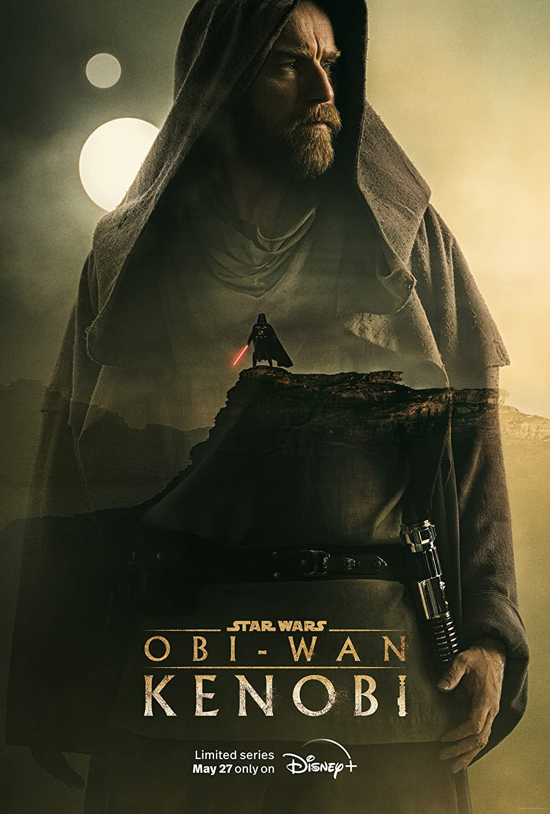
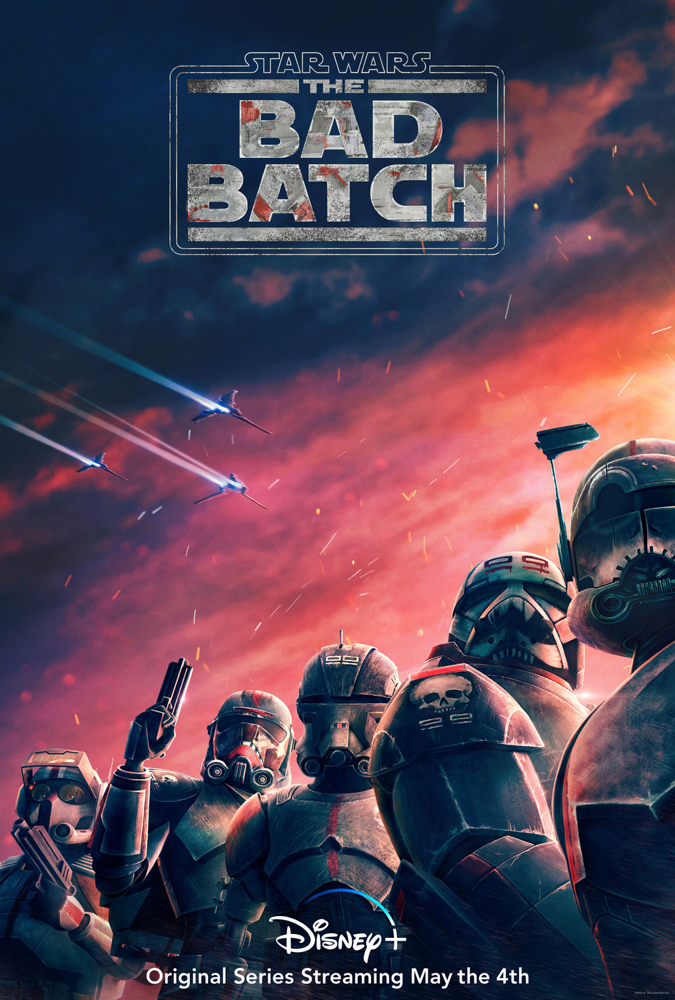
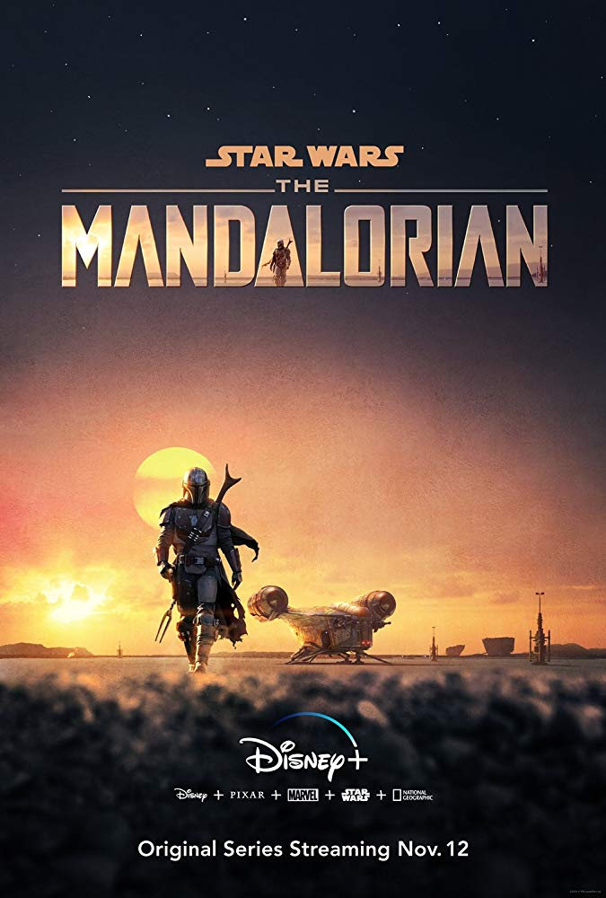
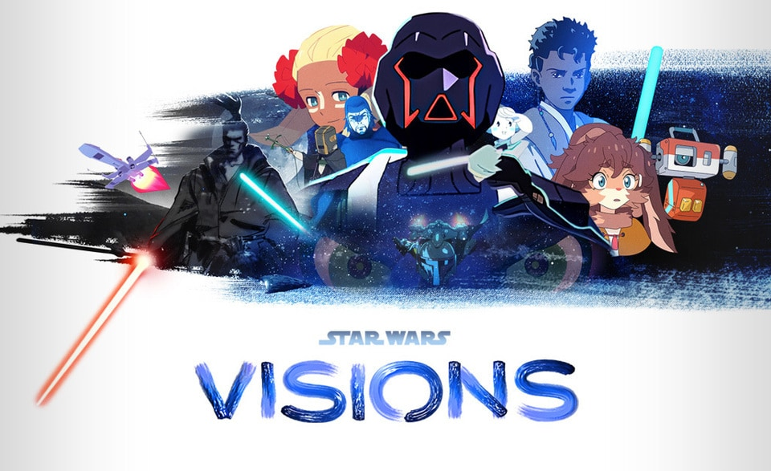
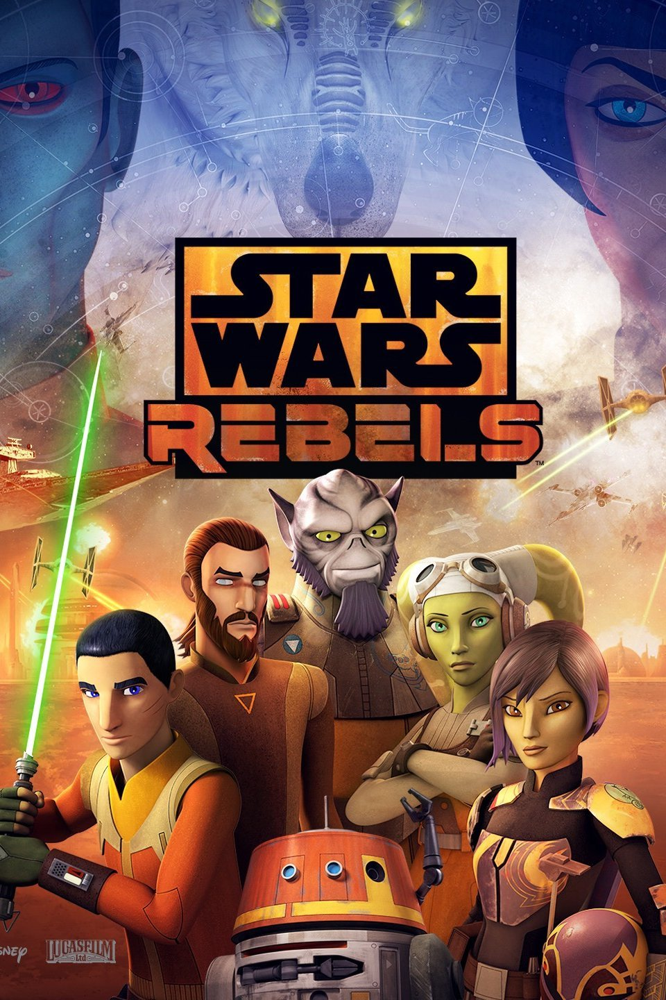

#8. The Book of Boba Fett (2021)

On the sands of Tatooine, bounty hunter Boba Fett and mercenary Fennec Shand navigate the Galaxy's underworld and fight for Jabba the Hutt's old territory.
#7. Obi-Wan Kenobi (2022)
The Jedi Master contends with the consequences of his greatest defeat -- the downfall and corruption of his one-time friend and apprentice, Anakin Skywalker, who turned to the dark side as evil Sith Lord Darth Vader.
#6. The Bad Batch (2021)
Members of a unique squad of clones find their way in a changing galaxy in the aftermath of the Clone War.
#5. The Clone Wars (2008)

The first weekly TV series from Lucasfilm Animation chronicles the adventures of Anakin Skywalker, Yoda, Obi-Wan Kenobi and other popular characters from the "Star Wars" universe during the violent Clone Wars, as dwindling numbers of Jedi knights struggle to restore peace.
#4. The Mandalorian (2019)
After the fall of the Galactic Empire, a lone gunfighter makes his way through the outer reaches of the lawless galaxy.
#3. Andor (2022)

Rebel spy Cassian Andor's formative years of the Rebellion.
#2. Visions (2021)
Seven Japanese animation studios bring their unique perspectives to the "Star Wars" universe through a series of short films.
#1. Rebels (2014-2018)
This animated entry in the "Star Wars" franchise fills the gap between the events of "Episode III" and "Episode IV." Imperial forces occupy a remote planet and are ruling -- and ruining -- its inhabitants' lives with an iron fist. A clever, disparate crew aboard the starship Ghost takes a stand against the Empire, facing new villains and colorful adversaries. The rebels on the Ghost include leader Kanan, ace pilot Hera, feisty heroine Sabine, tough guy Zeb and 14-year-old con artist Ezra.